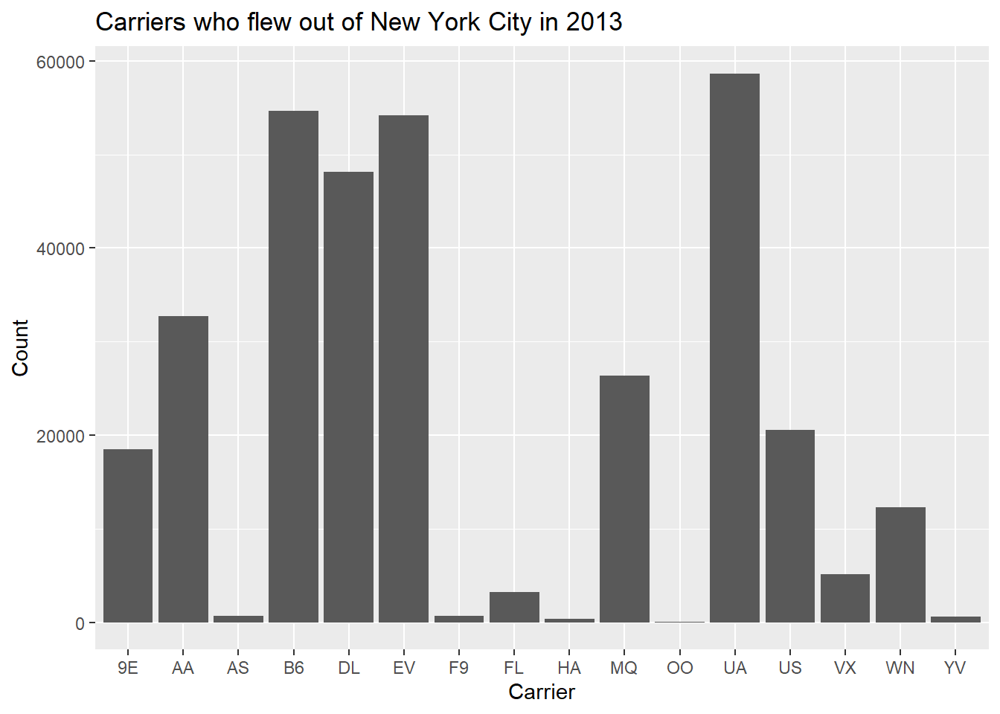

Barplots
Barplots, or barcharts, are used to visualise the distributions of categorical variables. This essentially provides us with the frequencies of categories within a categorical variable. Let's take a look at the distribution of airline carriers within the flights data that flew out of New York City in 2013. We can do this by creating a table containing the number of flights from each airline carrier as follows:
carrier.freq <- table(flights$carrier)
carrier.freq <- as.data.frame(carrier.freq)
colnames(carrier.freq) <- c("carrier", "number")Note, ggplot expects the data passed to it to be a data frame, which is why the above table is converted into a data frame. The names of the columns in our data frames have also been updated using the colnames function.
Task: Take a look at the carrier.freq data set within the R console.
Hint: You can view an object in R by simply typing its name into the R console window.
carrier.freq## carrier number
## 1 9E 18460
## 2 AA 32729
## 3 AS 714
## 4 B6 54635
## 5 DL 48110
## 6 EV 54173
## 7 F9 685
## 8 FL 3260
## 9 HA 342
## 10 MQ 26397
## 11 OO 32
## 12 UA 58665
## 13 US 20536
## 14 VX 5162
## 15 WN 12275
## 16 YV 601To create barplots using ggplot we use the geom_col function:
ggplot(data = carrier.freq, mapping = aes(x = carrier, y = number)) +
geom_col()
Figure 12: Figure 14: Carriers who flew out of New York City in 2013.
Task: Add to the code above to produce Figure 14.
You need to include the additional labs layer to ggplot using the x, y and title arguments.
ggplot(data = carrier.freq, mapping = aes(x = carrier, y = number)) +
geom_col() +
labs(x = "Carrier", y = "Count",
title = "Carriers who flew out of New York City in 2013") 
Note, the names of the airlines relating to the carrier codes can be found by typing airlines into the R console.
Barplots can also be used to compare two categorical variables. For instance, let's say we wanted to look at the number of flights that flew out of New York City in 2013 from each carrier and from each airport (LGA, JFK and EWR). To obtain a table of this information we simply add the flights origin to our previous table as follows:
carrier.origin <- table(flights$origin, flights$carrier)
carrier.origin <- as.data.frame(carrier.origin)
colnames(carrier.origin) <- c("origin", "carrier", "number")The barplot for comparing two categorical variables is very similar in this case, where we simply pass the additional fill argument to the aes function. Including the fill argument lets ggplot plot know that we want to split the barplot according to an additional categorical variable, which is origin in this case. The barplot is then given by:
ggplot(data = carrier.origin, mapping = aes(x = carrier, y = number, fill = origin)) +
geom_col() +
labs(x = "Carrier", y = "Count",
title = "Carriers who flew out of New York City in 2013") Figure 13: Figure 15: Stacked barplot of carriers who flew out of New York City in 2013.
This is what is referred to as a stacked barplot since the bars for each origin are simply stacked on top of one another for each of the carriers. You can control the colours in the stacked bar plots with two categorial variables by adding an additional layer + scale_fill_manual(values = c(...)).
This provides us with a visually nice barplot to present our carrier information by airport of origin. However, there are also alternative barplots to the stacked barplot. One alternative to a stacked barplot is the side-by-side (or dodged) barplot, which, as suggested by its name, places the bars next to each other instead of on top of one another. This can be produced as follows:
ggplot(data = carrier.origin, mapping = aes(x = carrier, y = number, fill = origin)) +
geom_col(position = "dodge") +
labs(x = "Carrier", y = "Count",
title = "Carriers who flew out of New York City in 2013") Figure 14: Figure 16: Dodged barplot of carriers who flew out of New York City in 2013.
This is done by passing to the geom_col function the position of the barplots, which in this case is dodge. Before moving on, consider the following two questions:
- What could be considered a positive of using a side-by-side barplot as opposed to a stacked barplot?
- What could be a disadvantage of using a side-by-side barplot?
Lastly, let's take a look at what is referred to as a faceted barplot. They provide an easier way to compare the carrier distributions by origin, and can be obtained as follows:
ggplot(data = carrier.origin, mapping = aes(x = carrier, y = number, fill = origin)) +
geom_col() +
facet_wrap(~ origin, ncol = 1) +
labs(x = "Carrier", y = "Count",
title = "Carriers who flew out of New York City in 2013") Figure 15: Figure 17: Faceted barplot of carriers who flew out of New York City in 2013.
Here we include the facet_wrap function, where we want separate barplots by origin, and hence we use ~ origin. We also choose to have them plotted in one column via ncol = 1. This makes it easier to compare their distributions now that they are not stacked on top or beside one another.
Before moving on to the next section, consider the following questions:
- What is the difference between histograms and barplots?
- Why can't we use histograms to visualise categorical variables?